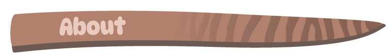
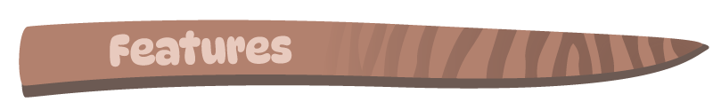
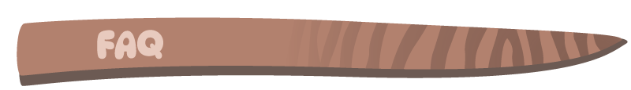
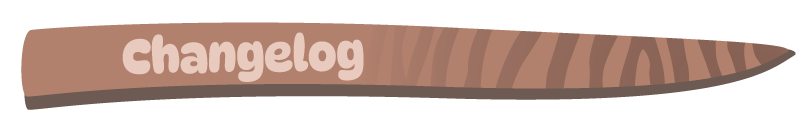
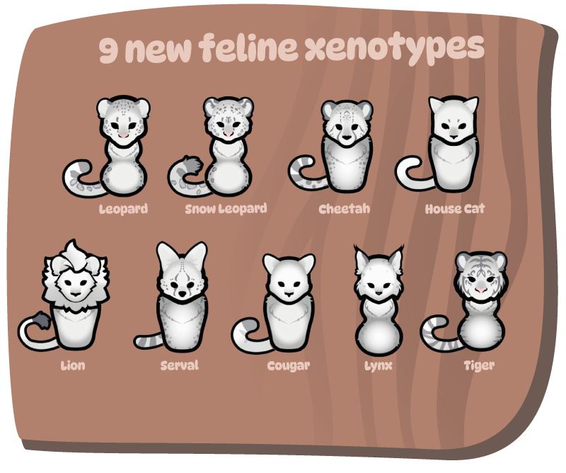

Right-click any image below → "Copy image address" (or "Copy link") to get the direct URL for Steam BBCode like [img]URL_here[/img].






If images still don't show: Check exact filenames (case-sensitive!), commit/push changes, wait 1-5 min for Pages to rebuild, then hard-refresh (Ctrl+Shift+R).